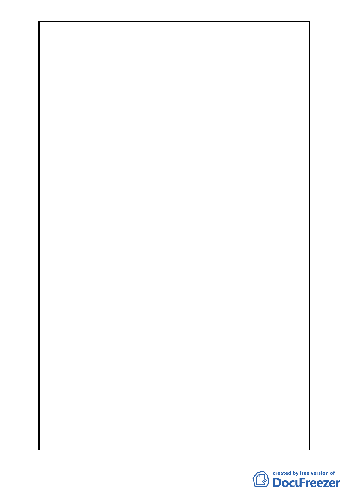

圍，申請臺北市政府「促進都市再生2010年臺北好好看」
開發案，現正以案名「變更臺北市中正區中正段二小段
48地號等37筆土地第3種住宅區及第3-2種住宅區變更為
第3種住宅區(特)及第3-2種住宅區(特)暨劃定都市更新
地區細部計劃案」進行都市計劃變更之公開展覽程序，
合先陳明。
二、茲因合康公司為順利取得住戶之同意書，以便其提送之
開發案得符合規定通過推薦，遂以“代住戶提出申請 "
為名，並以“高額容積獎勵 "為餌，誘使住戶簽署「擬
定臺北市中正區中正段二小段48地號等37筆土地都市更
新事業計劃案同意書」。查其同意書格式上雖記載「本
人已知悉本事業計畫 內容…」，惟住戶於出具同意書
時，根本對其計劃構想與內容毫無所悉，迄今已逾半年，
該公司仍未交付該都市計畫案之全部資料予各住戶，亦
未就計畫內容對住戶詳盡解說，對住戶要求之容積及相
關問題亦一再漠視，不願正面回應，顯係利用市府政策
美意誘使住戶陷於錯誤而簽署該同意書。
三、又，合康公司申請之開發案，於獲得市府推薦通過後，
即佔其案件“申請人 "之便，對住戶公開甄選實施者(建
商)之要求置若罔聞，甚且明言表示該公司即是「實施
者」、即是「建商」，顯已違背住戶委其“代為申請 "
之本意，更剝奪住戶選擇優良實施者之權利，因住戶受
限於臺北好好看開發案之特性，無法單方面變更案件申
請人，亦無法再另洽實施者提案申請，合康公司形同「以
案挾民」、「挾案取利」，對住戶權益之剝奪與侵害莫
此為甚。
四、此外，合康公司僅係一家“工程顧問 "公司，並無建築
經驗與實績足供住戶比評，況其登記資本額僅8800萬，
以本開發案全部費用高達新台幣六十餘億元，該公司迄
未能就如何取得營建資金，對住戶詳細說明，亦不願對
住戶就該項疑慮提出正面回應;至於與住戶權益直接相
關之合建契約及信託契約內容，更與住戶之要求南轅北
轍，更無法解除住戶對其是否有能力完成之疑慮，顯不
適合擔任如此大型都市更新案之實施者。
五、按合康公司在誠信、經驗、能力、財務等各方面，俱遭
住戶嚴重質疑，致其取得之同意書已陸續遭住戶撤銷或
取回，因住戶多係個別取回，因此取回之確實比例難以
計算，惟以陳情人所知撤銷或取回同意書之住戶已約近
30人，經減除後，合康公司所取得之同意比例已明顯不
- 28 -